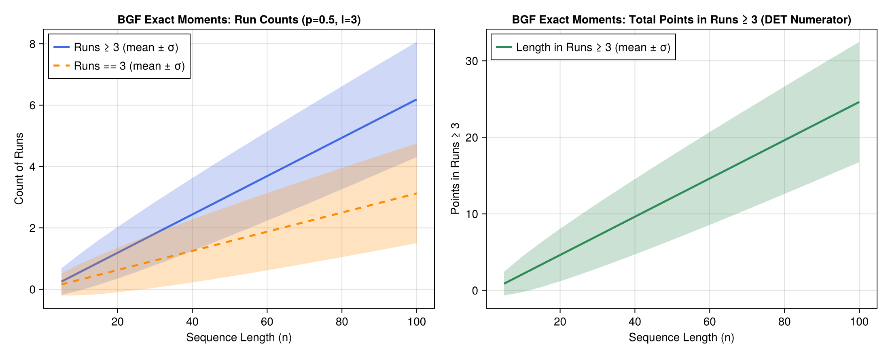

Binary word double runs
Probability for consecutive double runs (either 0s or 1s) of lenght k in binary words of length n, use p_binary_words_doub_runl(k,n)
julia> using AnalyticComb
julia> p_binary_words_doub_runl(6,200) #e.g. 100000011010... or 01111110101...
0.166...Restricted summands problem
Solving Polya partitions with restricted summands (denumerants) problem[1]. What is the number of ways of giving change of 99 cents using pennies (1 cent), nickels (5 cents), dimes (10 cents) and quarters (25 cents)?
That is, the number of ways to obtain 99 by summing 1s,5s,10s and 25s.
Or number of distinct sets $S = \{k_1,k_2,_k_3,k_4\}\, \quad k \in \mathbb{N}$ satisfying the equation:
\[1 k_1 + 5 k_2 + 10 k_3 + 25 k_4 = 99.\]
The generating function is: $P(z) = SEQ(z) \cdot SEQ(z^5) \cdot SEQ(z^{10}) \cdot SEQ(z^{25})$ and the solution is the cofficient of $z^{99}$ in the expansion: $[z^{99}] T(P(z))$.
\[T(P(z)) = \cdots + 213 z^{99} + \cdots\]
Function restricted_sum_part_gf(r) returns the generating function for elements in r and restricted_sum_part(k,r) returns the coefficient in $z^k$ for the generating function with elements in r.
julia> restricted_sum_part_gf([1,5,10,25]) # examine the generating function SEQ(z)*SEQ(z^5)*SEQ(z^10)*SEQ(z^25)
1
────────────────────────────────────
⎛ 5⎞ ⎛ 10⎞ ⎛ 25⎞
(1 - z)⋅⎝1 - z ⎠⋅⎝1 - z ⎠⋅⎝1 - z ⎠
julia> restricted_sum_part(99,[1,5,10,25]) # Counts for 99 as a sum of elements in (1,5,10,25).
213Bivariate Generating Functions (BGFs) & Exact Moments
Following Chapter III (Combinatorial Parameters and Multivariate Generating Functions) of Flajolet & Sedgewick[2], an auxiliary variable $u$ can mark a combinatorial parameter $\chi$ while $z$ marks the size $n$:
\[A(z, u) = \sum_{n, k \ge 0} a_{n,k} z^n u^k\]
By Proposition III.2 (Moments from BGFs, p. 158), differentiating $A(z, u)$ with respect to $u$ and evaluating at $u = 1$ yields the exact factorial moments of $\chi$ over objects of size $n$:
\[\mathbb{E}_n(\chi) = \frac{[z^n] \partial_u A(z, u)|_{u=1}}{[z^n] A(z, 1)}, \qquad \mathbb{E}_n(\chi(\chi - 1)) = \frac{[z^n] \partial_u^2 A(z, u)|_{u=1}}{[z^n] A(z, 1)}\]
Summands in Integer Compositions (Example III.5)
Using the marked sequence operator SEQ(B, u) where $u$ marks each summand in $I(z) = \frac{z}{1-z}$, bgf_moments extracts the exact mean, variance, standard deviation, and total count:
julia> using AnalyticComb
julia> z, u = SymPy.symbols("z u");
julia> C_zu = SEQ(z / (1 - z), u) # BGF for compositions with u marking number of summands
1
───────────
u⋅z
1 - ───────
1 - z
julia> bgf_moments(C_zu, 10; z=z, u=u)
(mean = 5.5, var = 2.25, std = 1.5, count = 512.0)Marked Consecutive Runs in Weighted Binary Words
For Bernoulli trials with probabilities $(p, q)$, weighted_bin_runs_bgf and weighted_bin_runs_moments mark run statistics of threshold $l$ across sequences of length $n$:
mode="count_ge": Number of maximal runs of length $\ge l$mode="length_ge": Total number of elements belonging to runs of length $\ge l$ (the numerator of RQA Determinism)mode="count_eq": Number of maximal runs of exact length $l$mode="double_count_ge": Number of maximal runs of either outcome ($p$ or $q$) of length $\ge l$
julia> weighted_bin_runs_moments(0.5, 0.5, 3, 50; mode="count_ge")
(mean = 3.25, var = 1.796875, std = 1.340475661845451, count = 1.0)
julia> weighted_bin_runs_moments(0.5, 0.5, 3, 50; mode="length_ge")
(mean = 12.75, var = 31.046875, std = 5.571972271992566, count = 1.0)